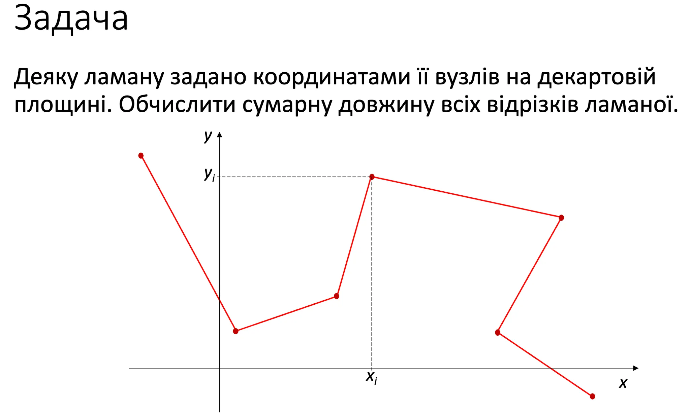

Lecture n8. Structures, constructors.
Вибір типів і проєктування функцій для ламаної лінії
Вибір типів
1. Опис однієї вершини (вузла) ламаної
double x, y; // абсциса та ордината- x — координата по осі X
- y — координата по осі Y
2. Послідовність вершин ламаної (кілька точок)
const int N = 7;
double x[N], y[N]; // послідовність абсцис і ординат- Зберігаємо координати кожної вершини у двох масивах:
- Таким чином, точка №i — це (x[i], y[i]).
3. Двовимірний масив точок
double vert[N][2]; // послідовність точок- Кожен рядок масиву — це окрема точка:
Тобто (vert[i][0], vert[i][1]) — це координати вершини i.
Об’єднання координат у структуру
Щоб не зберігати x і y окремо, їх об’єднують в одну структуру:
struct Point {
double x;
double y;
};Тепер Point — це новий тип, який описує одну точку.
Приклади використання
Point A;
A.x = 3;
A.y = 4;
Point B = A; // копіювання точки
Point C = {5, 5}; // ініціалізація одразу обох координат
Point *D = new Point(); // створення в динамічній пам'яті📘 A, B, C — звичайні змінні типу Point.
📘 D — вказівник (pointer) на точку.
Масив точок (ламана)
const int N = 7;
Point Vertex[N]; // послідовність точок- Vertex[i] — окрема точка (x, y)
- Vertex[i].x — абсциса точки i
- Vertex[i].y — ордината точки i
Таким чином, ламану можна подати як набір Point-ів.
Проєктування функцій
Оскільки ламану задано координатами її вузлів,
координати точок треба вводити з клавіатури.
1. Функція, що повертає введену точку
Point readPoint() {
Point answer;
cout << "Input x and y of a point: ";
cin >> answer.x >> answer.y;
return answer;
}- створює локальну змінну answer
- читає координати
- повертає заповнену точку
2. Функція, яка приймає точку як параметр
void readPoint(Point& aPoint) {
cout << "Input x and y of a point: ";
cin >> aPoint.x >> aPoint.y;
}- передаємо посилання Point&, щоб змінити передану точку напряму
- не повертає результат (тип void)
3. Оператор вводу з потоку
std::istream& operator>>(std::istream& is, Point& aPoint) {
is >> aPoint.x >> aPoint.y;
return is;
}✅ дозволяє писати просто:
Point P;
cin >> P; // читає обидві координатиПідсумок
| Елемент | Призначення |
|---|---|
| double x, y | координати однієї точки |
| double x[N], y[N] | дві послідовності координат |
| double vert[N][2] | 2D-масив координат |
| struct Point { double x, y; } | власний тип для точки |
| Point Vertex[N] | масив точок (ламана) |
| Point readPoint() | функція, що повертає введену точку |
| void readPoint(Point&) | вводить дані в уже існуючу точку |
| operator>> | зручний ввід через cin >> P |
Код:
std::istream& operator>>(std::istream& is, Point& aPoint) {
is >> aPoint.x >> aPoint.y;
return is;
}1. Що це таке
Це перевантаження оператора >> для вашого власного типу Point.
- operator>> — спеціальна функція, яка визначає, як саме вводити об’єкти типу Point через стандартний потік вводу (cin).
- Така функція дозволяє програмі “розуміти”, що робити, коли користувач пише:
cin >> P;2. Аргументи функції
(std::istream& is, Point& aPoint)- std::istream& is — посилання на об’єкт потоку вводу (зазвичай cin).
- Point& aPoint — посилання на об’єкт, у який треба зчитати дані (щоб зміни були видимі зовні).
3. Тіло функції
is >> aPoint.x >> aPoint.y;Тут використовується вже стандартний оператор >> для базових типів:
- спочатку читається значення для x;
- потім для y.
Тобто якщо користувач вводить:
3.5 4.2то отримаємо:
aPoint.x = 3.5
aPoint.y = 4.24. Повернення результату
return is;Це дозволяє ланцюговий ввід, наприклад:
cin >> P1 >> P2 >> P3;Тому що після виконання оператор знову повертає cin, і наступний>> може продовжити роботу.
5. Як тепер використовується
Після перевантаження, замість довгого:
cin >> P.x >> P.y;можна писати коротко і зрозуміло:
cin >> P; // читає обидві координатиЦе працює аналогічно тому, як cin >> n; читає число,
але тепер — для власного типу Point.
6. Повна картина
struct Point {
double x, y;
};
std::istream& operator>>(std::istream& is, Point& aPoint) {
is >> aPoint.x >> aPoint.y;
return is;
}
int main() {
Point P;
std::cout << "Input x and y: ";
std::cin >> P; // читає обидва значення
std::cout << P.x << " " << P.y;
}Приклад вводу/виводу:
Input x and y: 2.5 7.8
Output: 2.5 7.8Раціональне число (множина Q)
Раціональні числа — це числа, які можна подати у вигляді дробу:
$Q = \left\{ \frac{p}{q} \mid p \in \mathbb{Z}, \ q \in \mathbb{N} \right\}$
де
- p — чисельник (ціле число),
- q — знаменник (натуральне число, q ≠ 0).
1. Опис структури
Fraction
struct Fraction {
int num; // чисельник – ціле число
unsigned den; // знаменник – натуральне число
};2. Конструктори
а) Конструктор за замовчуванням
Задає нуль у множині Q (0/1).
Fraction() {
num = 0;
den = 1U;
}Або коротко через список ініціалізації:
Fraction() : num(0), den(1) {}б) Конструктор з параметрами
Fraction(int a, unsigned b) {
if (b != 0) {
num = a;
den = b;
}
else {
num = INT_MAX; // позначення помилки
den = 1;
}
}Пояснення:
- якщо знаменник не нуль — дроб правильно задано;
- якщо знаменник 0 — вважається, що дроб некоректний (num = INT_MAX).
Приклади:
Fraction half(1, 2); // 1/2
Fraction quarters(3, 4); // 3/4
Fraction zero; // 0/13. Розділення на файли
Файл Fraction.h
#pragma once
#include <iostream>
using std::ostream;
struct Fraction {
int num;
unsigned den;
Fraction() : num(0), den(1) {} // конструктор за замовчуванням
Fraction(int a, unsigned b); // прототип конструктора з параметрами
};
// прототип оператора виведення
ostream& operator<<(ostream& os, const Fraction& q);Файл Fraction.cpp
#include "Fraction.h"
#include <climits>
Fraction::Fraction(int a, unsigned b) {
if (b != 0) { num = a; den = b; }
else { num = INT_MAX; den = 1; }
}
ostream& operator<<(ostream& os, const Fraction& q) {
os << q.num << '/' << q.den;
return os;
}4. Оператор виведення <<
Пояснення:
- перевантажуємо оператор <<, щоб можна було писати:
cout << q;- виводить дріб у форматі “чисельник/знаменник”.
Результат:
Fraction f(3, 5);
cout << f; // виведе: 3/55. Підсумок
| Елемент | Призначення |
|---|---|
| num | чисельник (int) |
| den | знаменник (unsigned, ≠ 0) |
| Fraction() | створює 0/1 |
| Fraction(a, b) | створює a/b або помилку, якщо b=0 |
| operator<< | виводить дріб у вигляді "a/b" |
Приклади використання типу Fraction
Мета: показати, як створювати, присвоювати і виводити об’єкти типу Fraction.
Код прикладу
#include "Fraction.h"
using std::cout;
int main()
{
Fraction half(1, 2), quarters(3, 4), zero, copy;
copy = half; // структури можна присвоювати одна одній!
cout << "half = " << half
<< "\nquarters = " << quarters
<< "\nzero = " << zero
<< "\ncopy = " << copy
<< '\n';
system("pause");
return 0;
}Пояснення крок за кроком
- Створення об’єктів
Fraction half(1, 2);
Fraction quarters(3, 4);
Fraction zero;
Fraction copy;- half → представляє 1/2
- quarters → 3/4
- zero → створюється за замовчуванням (0/1)
- copy → поки не ініціалізований власним значенням
- Присвоєння структур
copy = half;- у C++ структури можна копіювати — усі поля num і den автоматично копіюються;
- після виконання цього рядка copy має ті самі значення, що і half.
- Виведення
cout << "half = " << half;- завдяки перевантаженому оператору <<, об’єкти типу Fraction виводяться у форматі:
чисельник/знаменник- наприклад, half = 1/2, quarters = 3/4, zero = 0/1, copy = 1/2.
- Виконання
half = 1/2
quarters = 3/4
zero = 0/1
copy = 1/2Висновок
| Код | Результат |
|---|---|
| Fraction half(1, 2); | створює дріб 1/2 |
| Fraction zero; | створює 0/1 |
| copy = half; | копіює значення структури |
| cout << f; | друкує дріб через перевантажений оператор << |
Функції для опрацювання структур
1. Структури для координат
struct Point { // Декартові координати точки на площині
double x;
double y;
};
struct PolarPoint { // Полярні координати точки
double ro; // довжина радіус-вектора
double phi; // кут у градусах
};2. Перетворення між координатами
2.1. З декартових у полярні
PolarPoint CartToPolar(Point c)
{
PolarPoint answer;
answer.ro = sqrt(c.x * c.x + c.y * c.y);
answer.phi = atan2(c.y, c.x) / M_PI * 180; // перехід у градуси
return answer;
}Пояснення:
- $ro = √(x² + y²)$ — довжина радіус-вектора
- $phi = arctan(y/x)$ — кут нахилу в градусах
2.2. З полярних у декартові
Point PolarToCart(const PolarPoint& p)
{
double alpha = p.phi / 180 * M_PI; // переведення у радіани
Point answer;
answer.x = p.ro * cos(alpha);
answer.y = p.ro * sin(alpha);
return answer;
}Пояснення:
- $x = r * cos(φ)$
- $y = r * sin(φ)$
3. Функції для структури Fraction
struct Fraction {
int num; // чисельник
unsigned den; // знаменник
Fraction() : num(0), den(1) {} // конструктор за замовчуванням
Fraction(int a, unsigned b); // конструктор з параметрами
};3.1. Допоміжні функції
void Simplify(Fraction&);
istream& operator>>(istream& is, Fraction& q);
ostream& operator<<(ostream& os, const Fraction& q);
Fraction operator+(const Fraction&, const Fraction&);
Fraction operator*(const Fraction&, const Fraction&);3.2. Реалізація у Fraction.cpp
Скорочення дробу
void Simplify(Fraction& f)
{
if (f.num == 0) { f.den = 1; return; }
int a = abs(f.num), b = f.den;
while (a != b)
if (a > b) a -= b; else b -= a;
f.num /= a;
f.den /= a;
}Ввід дробу
istream& operator>>(istream& is, Fraction& q)
{
int a, b;
is >> a >> b;
q = (b < 0) ? Fraction(-a, -b) : Fraction(a, b);
return is;
} @Додавання і множення
Fraction operator+(const Fraction& l, const Fraction& r)
{
return Fraction(l.num * r.den + r.num * l.den, l.den * r.den);
}
Fraction operator*(const Fraction& l, const Fraction& r)
{
return Fraction(l.num * r.num, l.den * r.den);
}4. Приклад використання
const int N = 10;
Fraction f[N];
for (int i = 0; i < N; ++i)
cin >> f[i];
Fraction S;
for (int i = 0; i < N; ++i)
S = S + f[i];
cout << "average = " << S * Fraction(1, N) << '\n';Пояснення:
- Вводимо масив дробів
- Обчислюємо їхню суму
- Множимо на 1/N, щоб знайти середнє значення
5. Підсумок
- Структура — новий тип даних, який програміст створює сам.
- Структура об’єднує кілька полів різних типів.
- Конструктор керує створенням екземпляра структури.
- Структуру можна використовувати як повноцінний тип для параметрів функцій і результатів.
- Функції з ім’ям operator дозволяють перевантажити стандартні оператори (+, *, >>, <<).
- Структури з конструкторами й операторами можна використовувати так само, як звичайні числові типи.